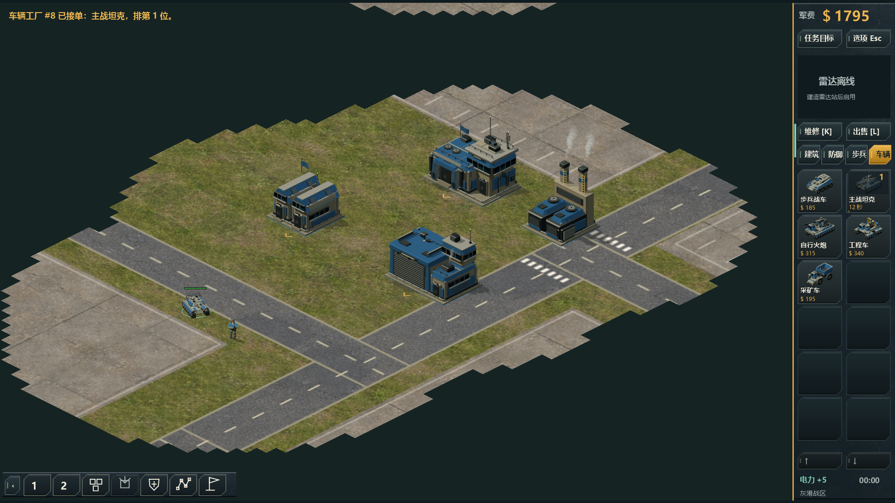

键鼠与界面逐项核对
2026-11-08 · 本地未发布。本文记录实际实现及验证范围。
采用的依据
《红警 2》完整原版引擎源码并未在本次找到的 EA 开源清单中。不能把初代红警或 OpenRA 的行为当作二代原版。本轮用原版手册、实际默认按键文件及二代公开扩展接口交叉核对。EA 开源公告
资料存在版本差异：本轮按实际 YR 默认文件采用 N 下一个、M 上一个、Shift+S 截图、U 私聊。HealthNav 默认未绑定，未把 U 偷换为血量筛选；F5～F12 保留语音嘲讽用途，单机不适用。键位可以在选项中更改。
鼠标：本地版的实际响应
右键拖屏的起拖容差和滚动速度由本作实现，公开接口没有提供足以证明原版每个像素完全一致的内部参数。中键拖屏、滚轮缩放继续保留用户此前指定的行为。
按钮：逐项处理结果
上述界面组织依据原版手册相应章节核对；图形、配色和游戏素材继续使用本项目现有设计。原版界面与高级指令栏说明
保留的范围差异
- 当前为单机。A 的外交行为受本关固定敌对关系限制，Tab 显示实际阵营状态；U 私聊和 F5～F12 嘲讽明确提示单机不适用，不伪造联网功能。
- 按此前明确要求保留每座工厂、兵营独立排产及 30 单容量。生产优先级只影响分单，不再搬移已支付进度。
- 保留滚轮缩放、中键平移、Alt+Enter 窗口切换和镜头倍率书签。这些属于本作已有便利功能。
- Y 已按单位等级筛选；新增经验记录和等级标记，不在本次按钮调整中另加战斗属性倍率。HealthNav 在默认文件中未绑定，可自行设置。
- 教学关保留智能提示；正式关卡使用简洁信息行。主菜单图鉴和模型预览保留，战场不再出现大头像详情卡。
核验方式
tests/fixtures/yr-default-hotkeys.csv 固定下载时的 85 条命令与 SHA256。专项测试同时检查默认值和实际按键映射，再调用本地窗口的鼠标、键盘及绘制处理，覆盖拖屏、编组、雷达、路径规划、标记、部署、改键与截图。
运行 ./scripts/build.ps1 -ControlsVerify 进行专项验证；-ControlsPreview 同时导出本地窗口截图。普通模式不会将用户按键文件改为测试配置，测试写入缓存目录。其他经济、生产、教学、寻路、滚屏和六方关卡结果见验证记录。
截图：战场界面 · 收起指令栏 · 按键设置 · 阵营信息
85 条默认绑定明细
下表由独立参考快照生成；“单机不适用／锁定”有明确界面反馈。Tab 阵营列表和未绑定的 HealthNav 另列于游戏内设置。
实际游戏界面

本轮验证结果
| 检查 | 结果与范围 |
| OriginalControlChecks | 通过；85 条默认键位及实际映射、鼠标拖屏、编组、路径点、标记、雷达、部署、截图、改键 |
| ParallelProductionChecks | 通过；三阵营各 1／2／3 座设施的实际产出及独立队列、退款、暂停 |
| EconomyChecks | 通过；矿石、工兵、载员、维修、卫星 |
| ConstructionChecks | 通过；建筑生产付款、就绪放置、搬迁、维修、出售 |
| QueueSurrenderChecks | 通过；30 单容量、生产总览与逐阵营投降 |
| CampaignChecks | 通过；十步教学及两类正常付费自动通关，254 秒胜利，仍为 560 秒上限 |
| PathingChecks | 通过；20／60 Hz 混编通行及后排开火 |
| WindowChecks | 通过；全屏、指针、预选、生产入口、教学、雷达、第二关运行 |
| ScrollChecks | 通过；地面拼接、三档倍率、64 MiB 缓存、迷雾 |
| ThirdMissionChecks | 通过；六方、岛屿唯一出口、真实开局、雷达、第二关 360 秒和第三关 420 秒推演 |
河湾镇批量测试曾为中位 58.1 ms；单独复测中位 9.5 ms、p95 10.7 ms。第三关本次中位 11.3 ms、p95 13.9 ms。它们是本机离屏窗口绘制样本，不是恒定帧率承诺。
旧通关脚本改为八人以上集结、避免追逐全图远处侦察单位并使用工兵占领，胜利、资金和时间断言保留。
构建及截图校验。本地可执行文件已更新，没有提交、推送或发布 GitHub。